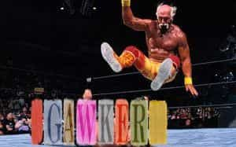

< < < Back
Gawker Is Officially Dead—Good Riddance – Return Of Kings
Gawker, gossip rag about media and celebrities and a pot-stirring, bottom-feeding blog, is dead.
It made its last blog post Monday. Hulk Hogan delivered a $140 million body slam to the nice boys and girls who run the company for posting portions of a sexytimes tape featuring Hogan and some chick named Heather Clem (Bubba the Love Sponge’s ex-wife). Clem videotaped sex with the wrestler without his knowledge way back in 2006, and by 2012 Gawker editor AJ Daulerio decided it would be cute to post excerpts of the video on their web site. That decision led to the demise of one of the barnacles on the ass end of the internet.
Daulerio was later asked if the video had any news value in court and was forced to respond “no.” Daulerio was then asked in court:
Had you known that Hulk Hogan would be emotionally distressed by this publication, you would have still published it, correct?
And he replied with a cold answer that is totally unsurprising to those of us who have worked in vicious, sociopath-laden newsrooms.
Sure, yes.

Hulk Hogan body slammed Gawker into Chapter 11
He then went on to say he might draw the line at what makes the cut to get published and what doesn’t at the rape of a child under age four. Along those lines, the web site pioneered manufacturing outrage among its audience members to drive traffic and clicks, often on spurious claims or downright maliciousness. Daulerio is quoted as saying he couldn’t “give a fuck” about the veracity of any story that got published on the blog.
Karma is a bitch. For once, the company took a dump on the wrong person. The Hogan lawsuit alleged invasion or privacy, infringement of personality rights, and intentional affliction of emotional distress, and of course that lawsuit was enough to financially devastate the company. Gawker filed for bankruptcy only three months after the verdict was handed down, despite desperate attempts by its CEO Nick Denton to keep it on life support. When Gawker was sold to Spanish media company Univision, one of their first decisions was to shut it down.
But Hogan was not the only victim of their slack-jawed brand of gawking. The gossip rag, typical of many mainstream media outlets, pissed off many people with its voyeurism, rumor mongering and character assassination. Peter Thiel, co-founder of PayPal was outed for being gay by the blog back in 2007, and the expose on his private life was enough to make him vow revenge for the intrusion. He worked to fund lawsuits to take money out of their behinds.
Gawker also posthumously reported on a former Toronto mayor smoking crack on video. It showed Tom Cruise preaching in the Church of Scientology. It claimed the married CFO of Conde Nast solicited gay sex. To me, it’s not that these things were published, but moreso who gives a fuck? People read this and get worked up about it? Incredible. But the mean-spiritedness of the publication, scoring points while airing other people’s disgraces before the world makes its demise all the more sweet.
Trickle Down Effect
Gawker CEO Nick Denton getting sued in court
Perhaps what is saddest about the blog’s legacy is Gawker’s shameless publishing influenced media outlets of all different kinds: BuzzFeed, Vox, CNN, Fox News, The New Yorker, The New York Times and other household names all moved towards a business model like Gawker’s. This means web sites, television channels, and newspapers that already catered to the lowest common denominator downgraded their standards and became even more tabloid.
This was noticeable for those of us who worked in the mainstream media as standards went down every year and the “news,” already left-slanted and driven by sensationalism, became little more than a coffee klatsch designed to gather as many fat-bottomed women around the TV set as possible and get them started clucking.
Statistics showed Gawker’s audience was nearly three-quarters female, proving the female predilection for gossip and mean-spirited character assassination runs deep psychologically. Women get off on this stuff. So, only a few years later, Jezebel was launched in by Gawker 2007. Unfortunately, Jezebel will survive the bankruptcy. Jezebel’s founding editor, Anna Holmes, brags that Jezebel feminized mainstream news even further.
The relentless assault we made on traditional women’s media had an effect. There was a gradual process, but it was undeniable after a while that they were responding to and really mimicking what we were doing.
Kara Swisher, another online “journalist” talks about how Gawker moved mainstream news reports further down the road of editorializing and sensationalism.
As reporters, while we try to be fair and ethical, I think we err on the side of not calling things out for what they were. They did that beautifully — and it sort of emboldened the rest of us.
The Old York Times wrote about how the blog sped up the already fast pace of gossip and made it even more insidious than it already was.
Gawker opened a Pandora’s box, too. It sped media up to an insane pace. After Gawker, you didn’t take nights and weekends off. You couldn’t publish once a week. The internet was a beast that always needed feeding, and it demanded ever-hotter, ever-more-outrageous takes.

TVs should come with these warning labels, and the content has only gotten worse thanks to the influence of sites like Gawker
Tellingly, the founder and CEO of Gawker, Nick Denton was a former Financial Times journalist before striking out to do his own thing with Gawker. This is important because in my opinion (through over a decade of experience dealing with media people and working side by side with them) it illustrates the mentality of many in the media. They don’t care whose lives they’re destroying or if the public interest is being served as long as they can make a buck off it.
It’s easy to see Gawker and its bastard children Jezebel and Wonkette (self-proclaimed nasty vile little snark mob) feed female intrigue and mean-spirited, nihilistic criticism with anything they can sink their teeth into. In that way, it is a case study in female psychology and sociology since the vast majority of their readers are female. Men, if you want to know what’s on women’s mind, go read this dreck. Women lap it up like kittens lining up for a milking. Just prepare to be shocked and awed at what women really want when it comes to online “news.” Gawker was about nothing but pure, unabashed depravity. In many ways it made the National Enquirer look like a children’s magazine.
At least for a little while, the internet will be a better place until its replacement arises from some other dank corner of the internet. Women love gossip and they love tearing people down, so there will always be a reliable market for unscrupulous publishers to turn a buck. More than anything, Gawker was a reflection of just how mean spirited and vicious some people (especially women) can be. It was a reflection of a fully feminized culture that has no moral compass or sense of decency when it comes to dealing with other people. Good riddance.
May Hulk Hogan laugh all the way to the bank.
Read More: What Will Be Gawker’s Next Move After Being Ordered To Pay Hulk Hogan $115 Million?